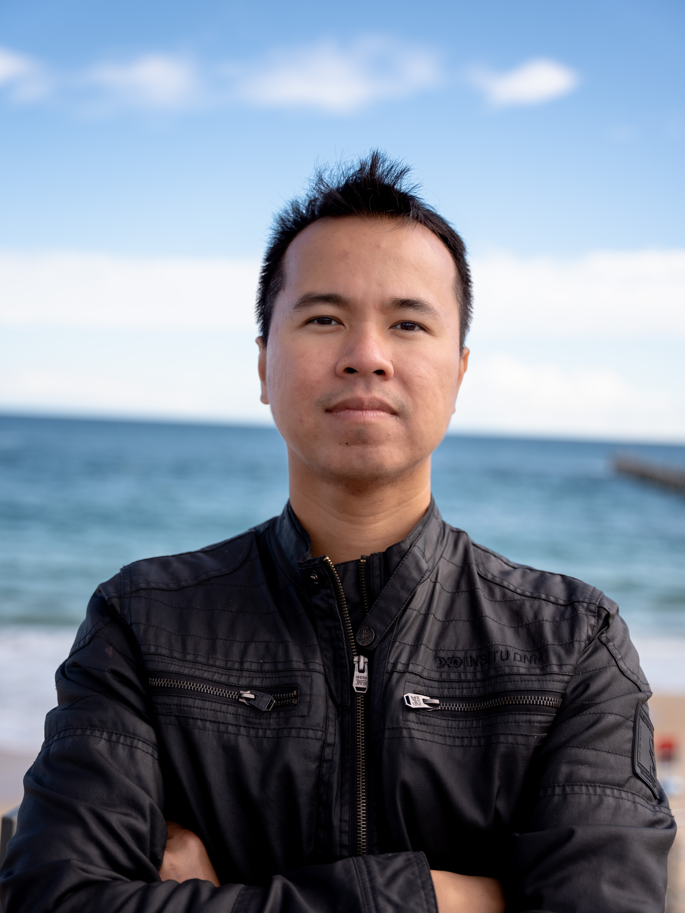
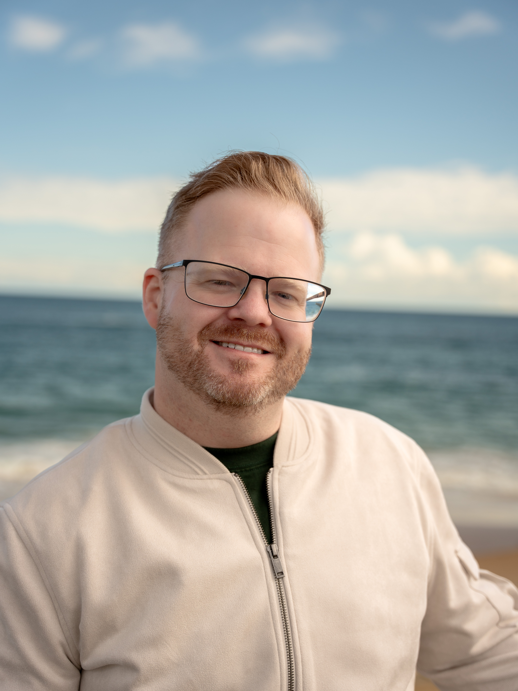

Free portrait moments
Short, welcoming portrait opportunities for individuals and families who want a simple image to keep.
About Memory Lane Photo Studio
Memory Lane Photo Studio is led by Ricky Vu and Mark Lee, two Adelaide-based creatives who bring together technical skill, cultural warmth and a genuine love for meaningful images.
Our Story
Ricky and Mark both work in IT, where attention to detail, problem solving and patience are part of everyday life. Photography gives us a different way to use those same strengths: observing light, understanding people, guiding a moment and turning it into something that feels honest.
Ricky previously photographed in Vietnam, bringing experience with portraits, people-focused storytelling and a gentle visual style shaped by Asian warmth and family connection. Mark lives in Australia and brings a long-standing passion for photography, people, places and the quiet details that make a moment memorable.
Together, we want Memory Lane Photo Studio to feel close, friendly and accessible. Our work is not about stiff posing or making photography feel exclusive. It is about helping people feel comfortable, seen and proud of their own story.
Photography for everyone
One of the reasons we created Memory Lane Photo Studio is because we believe photography should not feel distant, expensive or only reserved for special occasions. A good portrait can help someone feel seen, remembered and valued, and we want more people to have access to that feeling.
As part of this mission, we aim to regularly organise simple free portrait sessions for individuals and families across Adelaide. These sessions are designed to be friendly, relaxed and approachable, especially for people who may not usually book a professional photographer.
Whenever possible, guests will receive their selected images during the session or later the same day. The only thing we ask for in return is the most honest payment of all: a smile.
Short, welcoming portrait opportunities for individuals and families who want a simple image to keep.
We aim to provide selected images during the session or later the same day when the setup allows.
These community sessions are about connection, confidence and making photography feel more human.
Meet the Team
Each session is guided with care, calm direction and a balance of creative instinct and technical attention.

Photographer / IT Professional
Ricky brings a calm, people-first style shaped by his photography experience in Vietnam and his background in IT. He enjoys creating images that feel warm, personal and natural, especially for families, couples and everyday memories that deserve to be kept.
His approach is gentle and practical. He understands that many people feel awkward in front of the camera, so he focuses on simple direction, relaxed prompts and small details that help clients feel more confident during the session.

Photographer / IT Professional
Mark lives in Australia and brings a thoughtful, observant eye to Memory Lane Photo Studio. His interest in photography comes from a love of people, places and the small moments that often become the most meaningful later.
With his IT background and creative curiosity, Mark values clarity, preparation and a smooth client experience. He helps shape sessions that feel friendly, organised and relaxed, while keeping the final images clean, natural and true to the people in them.
What We Believe
Beautiful photography should not feel distant or intimidating. We want families, couples, friends and individuals to feel welcome.
We guide with simple prompts and gentle direction so clients do not need to know how to pose before arriving.
Our IT background helps us stay organised, detail-focused and careful with files, galleries, editing and delivery.
Our Vietnamese and Australian perspectives help us create a friendly, inclusive and thoughtful photography experience.
Work with us
Whether you are planning a family session, a couple shoot, a portrait update or a small event, we will help you choose a simple session plan that fits your story.
Send an Enquiry